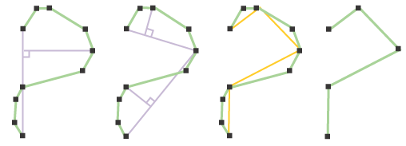

Generalize
This tool simplifies geometries by using one of a number of linear generalization algorithms. Generalization reduces the number of vertices that make up a feature without altering it's shape (too much). Ideally, the result layer will provide a smaller data volume without compromising on visual quality.

Two types of linear generalization are supported: topological and non-topological.
Topological generalization preserves key geometric properties (closed polylines will remain closed, polygon holes will be contained within polygon boundaries, etc.)
Non-topological generalization is implemented by the Douglas-Peucker algorithm. The distance tolerance parameter can be used to specify the generalization level. Higher settings will produce smaller datasets but alter shapes more significantly.